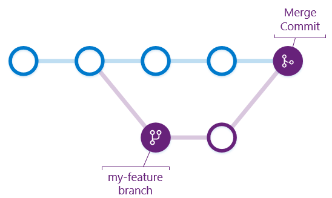

Intro to
katopod@csd.uoc.gr
Let me tell you a story
Started alone
Got company
Used and sticks
Used
Conflicted copies
But then something wonderful happened
Found GIT
What is GIT?
Is GIT hard?
Will it take me a long time to learn?
Setup
Installing GIT
- GitHub Desktop
- Homebrew
-
$ sudo apt-get install git-alland friends - More @ git-scm.com
Project hosting
- for education unlimited private repos while you are a student
- unlimited private repos
- gitlab unlimited private repos
- keybase.io encrypted private repos
Terminology
Basic workflow

Let's create a repository!
Say hello
$ git config --global user.name "Alex Katopodis"
$ git config --global user.email "katopod@csd.uoc.gr"
Initialize
$ git initcreates .git dir, repository is in there
Check
$ git statusShows info about modified, new, and deleted files
Not much to see yet
$ git statusOn branch master Initial commit nothing to commit (create/copy files and use "git add" to track)
The repository is empty, let's add stuff
$ touch nyancat.js$ git statusOn branch master Initial commit Untracked files: (use "git add <file>..." to include in what will be committed) nyancat.js nothing added to commit but untracked files present (use "git add" to track)
Add
$ git add <file>...Add files to staging area
git add -A adds all new,
modified, and deleted files from the working area
$ git add nyancat.js$ git statusOn branch master Initial commit Changes to be committed: (use "git rm --cached <file>..." to unstage) new file: nyancat.js
Commit
$ git commitRecords changes to repository, you have to provide a commit message
git commit -m "commit description"will commit with the message you provide
$ git commit -m "nyan~"[master (root-commit) b748793] nyan~ 1 file changed, 0 insertions(+), 0 deletions(-) create mode 100644 nyancat.js$ git statusOn branch master nothing to commit, working directory clean
Log
$ git logShows commit history
$ git logcommit b748793a7febd39f911e53a1ee0f555924f8d77c Author: Alex Katopodis <akatopo@users.noreply.github.com> Date: Tue Dec 8 22:12:00 2015 +0200 nyan~
.gitignore
- Special file
- Indicates files that should be ignored from changes
- Can be in root, and subdirs
- Supports wildcards
Sample .gitignore
# Can ignore specific files
.DS_Store
# Use wildcards as well
*~
*.swp
# Can also ignore all directories
# and files in a directory.
tmp/**/*Let's add some more content
$ echo "console.log('meow!')" >> nyancat.js$ git statusOn branch master Changes not staged for commit: (use "git add <file>..." to update what will be committed) (use "git checkout -- <file>..." to discard changes in working directory) modified: nyancat.js no changes added to commit (use "git add" and/or "git commit -a")
Changes
$ git diffShows changes between working directory and index
$ git diff HEAD
Shows changes between working directory and repository
$ git diff --cached
Shows changes between index and repository
$ git diffdiff --git a/nyancat.js b/nyancat.js index e69de29..f842659 100644 --- a/nyancat.js +++ b/nyancat.js @@ -0,0 +1 @@ +console.log('meow!')$ git add nyancat.js$ git commit -m "meow"[master b4ea710] meow 1 file changed, 1 insertion(+)
Remove changes
$ git checkout -- <file>...Removes changes from working directory
The -- separates options from other arguments
This will permanently remove your changes from the working directory
Remove changes pt. 2
$ git reset HEAD <file>...Removes changes from index
Branching out
Create a new branch

Branch
$ git branch <branchname>Creates branch
git branch
Lists branches
git branch -d <branchname>
Removes branch
Checkout
$ git checkout <branchname>Switches to branch
$ git branch branch-nyao$ git branchbranch-nyao * master$ git checkout branch-nyaoSwitched to branch 'branch-nyao'
Merge changes back

Merge
$ git merge <branchname>Merges branch into current branch
$ echo "console.log('rawr!')" >> nyancat.js$ git add nyancat.js && git commit -m 'rawr'[branch-nyao 550fd06] rawr 1 file changed, 1 insertion(+)$ git checkout masterSwitched to branch 'master'$ git merge branch-nyaoUpdating b4ea710..550fd06 Fast-forward nyancat.js | 1 + 1 file changed, 1 insertion(+)
Remotes
Add remote
$ git remote add <remotename> <remotelocation>Sets a new remote with name remotename
git remote -v
Shows a list of existing remotes
Push to remote
$ git push -u <remotename> <remotebranchname>Pushes changes to remote with name remotename and branch remotebranchname
-u tracks the remote's branch
$ git remote add origin git@github.com:akatopo/yummy-octo-turtle.git$ git remote -vorigin git@github.com:akatopo/yummy-octo-turtle.git (fetch) origin git@github.com:akatopo/yummy-octo-turtle.git (push)$ git push -u origin masterCounting objects: 9, done. Delta compression using up to 4 threads. Compressing objects: 100% (3/3), done. Writing objects: 100% (9/9), 675 bytes | 0 bytes/s, done. Total 9 (delta 1), reused 0 (delta 0) To git@github.com:akatopo/yummy-octo-turtle.git * [new branch] master -> master Branch master set up to track remote branch master from origin.
Pull from remote
$ git pullPulls changes from the remote's branch we tracked earlier
$ git pullremote: Counting objects: 3, done. remote: Compressing objects: 100% (2/2), done. remote: Total 3 (delta 0), reused 0 (delta 0), pack-reused 0 Unpacking objects: 100% (3/3), done. From github.com:akatopo/yummy-octo-turtle 550fd06..1c866cb master -> origin/master Updating 550fd06..1c866cb Fast-forward nyancat.js | 5 +++-- 1 file changed, 3 insertions(+), 2 deletions(-)
Clone repository
git clone <remotelocation> <dirname>Downloads selected remote repository from <remotelocation> to <dirname>
$ git clone git@github.com:akatopo/yummy-octo-turtle.git yummy-octo-turtleCloning into 'yummy-octo-turtle'... remote: Counting objects: 12, done. remote: Compressing objects: 100% (4/4), done. remote: Total 12 (delta 1), reused 9 (delta 1), pack-reused 0 Receiving objects: 100% (12/12), done. Resolving deltas: 100% (1/1), done. Checking connectivity... done.$ tree yummy-octo-turtleyummy-octo-turtle └── nyancat.js 0 directories, 1 file
Let's put this all together
Extras
Apps
- GitHub Desktop
- Atlassian Sourcetree
- SmartGit
- Your IDE/code editor
Documentation
- help.github.com
- devdocs.io
- git-scm.com
- Git Cheatsheet
git help <command>
Clone this presentation
git.io/git-intro